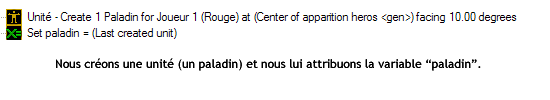
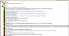

Dans ce petit tutoriel, je vais vous apprendre à faire des cinématiques pour Warcraft III.
Malgré ce que l'on pourrait penser c'est très simple. Seules votre imagination et votre patience influent sur la qualité de la vidéo. ;) Le niveau d'une personne ayant déjà utilisé l'éditeur et quelques déclencheurs est toujours préférable même s'il n'est pas obligatoire. Je vous conseille tout de même de vous familiariser avec le logiciel avant d'attaquer le tutoriel !
Dans cette partie, je vais un peu vous expliquer ce que nous allons faire dans ce tutoriel. Ne vous découragez pas, je vous conseille fortement de commencer par ce chapitre si vous ne savez pas trop ce que l'on va faire.
Eh bien une cinématique, si vous ne le savez pas, est constituée par les nombreuses petites « vidéos » que l'on peut voir lors des campagnes. Si si vous savez, dans Warcraft III The Frozen throne, on peut voir une première cinématique montrant Maiev qui organise la recherche d'Illidan dans la forêt.
J'espère que je vous éclaire un petit peu...
Plus précisément, c'est le moment où différents interlocuteurs échangent un dialogue ou font différentes actions. C'est une phase de jeu où le joueur ne peut pas jouer, et que l'on peut principalement voir en début et en fin de mission (parfois au milieu).
Noon ne partez pas ! C'est trèèès simple vous verrez. :D
Je vais maintenant vous parler de tous les points que nous allons développer.
J'aimerais durant l'apprentissage de la vidéo, vous montrer plein de points intéressants dans :
les déclencheurs ;
les variables ;
les unités ;
les caméras ;
...
Si vous n'avez pas trop compris tous les termes que j'ai employés, voici un bref récapitulatif des termes de l'éditeur.
Les déclencheurs
Les déclencheurs sont composés de trois parties.
L'événement : si quelque chose se passe, il va se passer quelque chose.
La condition : si quelque chose se passe dans certaines conditions (exemple : le héros qui fait l'action est bien %u2014 par exemple %u2014 le paladin), il va se passer quelque chose.
L'action : si quelque chose se passe, il va se passer quelque chose.
Les variables
Elles permettent d'identifier quelque chose. Par exemple, on crée une unité, un paladin (encore ^^ ). La variable va permettre à sa création d'être identifiée. Ce qui lui permettra plus tard, s'il y a plusieurs paladins, qu'on sache que c'est bien celui qu'on a créé tout à l'heure.

(C'est un peu flou je l'avoue, mais vous comprendrez avec la pratique. ;) )
Les unités, vous devez savoir ce que c'est ! :p
Les caméras
Elles sont ce qu'on peut qualifier « d'?il », car c'est ce que verra le joueur qui visionne la cinématique.
Allez les jeunes mappeurs en herbe, passons à la pratique !
Eh bien oui, pour faire une cinématique, il faut un décor plutôt agréable à regarder et en accord avec le thème voulu. Nous allons donc ouvrir l'éditeur de cartes !
... Chargement...
Il est ouvert ! Et maintenant ?
Déjà imaginez le scénario (déjà fait).
Nous allons créer une nouvelle carte avec l'environnement voulu ! Donc vous allez dans : Fichier ==> Nouvelle carte
Rentrez les paramètres suivants :
taille : 96*96 devrait suffire pour une cinématique, :) mais là vous faites à votre convenance (pas trop petit tout de même ^^ ).
Tuile : Ashenval (si vous ne savez pas pourquoi, relisez bien le scénario :p ).
Mettez le terrain initial à votre convenance :) (je vous conseille de l'herbe pour que vous puissiez faire un petit sentier en terre...).
Et enfin, laissez le reste par défaut.
Commencez par tracer le sentier en terre, ne le faites pas trop régulier et assez long. Entourez-le de quelques herbes folles, de feuilles... Un peu plus écarté du sentier, je vous conseille de mettre une forêt assez dense rappelant Ashenval.
Voilà ce que l'on peut arriver à faire assez brièvement (surtout que je n'en entends pas un dire que c'est laid :lol: )...
Alors là, il va falloir vous concentrer ! Ce n'est pas dur mais un peu embêtant si vous voulez atteindre la perfection ! :p
Allez dans : Couche ==> Caméras
Et là par magie cliquez sur : « Créer Caméra ». Ohhhhh ! Une caméra toute bleue très laide est apparue !
Maintenant, cliquez sur « Caméra 1 » (clic droit), puis sur « Changer les propriétés de la caméra ».
Maintenant, avec les informations disponibles, essayez de la placer pour avoir un plan assez rapproché du point de départ du héros.
Un conseil, utilisez surtout ces trois informations.
Rotation
Indique la rotation de la caméra.
L'angle d'attaque
Indique l'angle que la caméra va prendre par rapport au sol (mettez des valeurs entre 300 et 350, sinon cela donne un résultat bizarre ^^ ).
La distance
C'est la distance de la caméra par rapport au sol.
À partir de tout cela, essayez de faire un bon angle de départ pour votre héros.
(Si vous préférez, vous pouvez aussi bouger avec Ctrl + clic et en bougeant la souris ; et après vous mettez « Configurer caméra sur vue actuelle » quand vous avez une vue qui vous convient.)
----- Travail ----- ... ...
...
...
Fini ? :D Tant mieux, maintenant vous devez en créer deux autres. Ahaha ! Elles seront placées plus loin sur le sentier quand le héros rencontre le fantassin et encore une plus loin, celle où la goule sera (ne vous plaignez pas, parfois, il faut en mettre plusieurs dizaines ^^ ) !
Bravo ! Voici comme exemple, les trois caméras que j'ai faites :
Allez tout d'abord dans l'éditeur de déclencheur (F4). Supprimez le déclencheur mêlé et créez-en un nouveau (Ctrl + T) et appelez-le « cinematique » (les accents ne sont pas acceptés). Et là, vous allez créer un « Événement » ! Et cherchez dedans :
Temps - Time Elapsed
et mettez-le sur 0.00 seconde.
Ça signifie que quand vous lancerez la partie, après 0.00 seconde, l'action se lancera (pour que l'action se lance en début de partie).
Aucune condition n'est requise.
Nous allons mettre une série d'actions que je vous décrirai après :
Cinematique - Cinematic - Mode On for all player (par défaut)
Cinematique - Fade Filter - Fade out over 0 seconde... (par défaut)
Le premier veut dire que tous les joueurs sont en mode cinématique, donc plus aucun joueur ne peut bouger. Le second (fade out) permet de rendre l'écran tout noir le temps de quelques secondes de préparation des mouvements éventuels. Le « over 0 seconde » explique que le fade out s'affichera dès le début.
Nous allons maintenant positionner la caméra, créer le héros, mettre la nuit... Commençons par la caméra :
Camera - Apply camera object (timer) - Appliquer Camera 001 gen for joueur 1 rouge over 0.00 seconde
Pour avoir la « camera001 gen » de sélectionnée, cliquez sur « camera object » et cliquez dans la pastille devant la camera 001. Vu que la caméra est mise avant la mise en place de la vidéo, on n'a pas besoin de lui attribuer une variable pour qu'elle apparaisse dans les variables (souvenez-vous de cela, on appliquera ce modèle très souvent).
Ça placera la caméra 1 tout de suite.
Maintenant le personnage !
Je suis cruel et j'ai envie de vous faire travailler les variables (pas obligatoire pour ce cas) :diable: .
Nous allons créer un paladin niveau 4 pour le joueur rouge à une exposition de degré à 10°. Par étapes successives. La première consiste à créer la région sur la carte à l'endroit où vous voulez que le héros apparaisse (qu'on puisse le voir de la caméra ^^ ). Vous allez créer une petite région à l'endroit voulu sur la carte et renommez-la en « apparition heros » (regardez l'exemple).
Petit mot à part : ne faites pas comme moi, sauvegardez les cartes j'ai dû les refaire :-° !
Vous avez votre région ! Maintenant, allez dans l'éditeur de déclencheur puis cliquez sur la croix jaune (ou Ctrl + B) pour les variables ! Puis, la croix verte pour faire une nouvelle variable : son nom : « paladin », type : « unité », le reste par défaut.
Retournez au code puis à la suite remplissez :
Unité - Create Units facing Angle - Create 1 Paladin for Joueur 1 (Rouge) at "apparition heros" (la région que nous avons créée) facing 10 degres (pour la valeur, cliquez dessus puis tout en bas il demandent de rentrer une valeur, marquez 10 (ou autre selon votre cas)).
Le 10 peut changer selon l'orientation que vous voulez donner au héros.
Nous allons maintenant donner à notre héros une variable que nous avons créée :) !
Alors juste après, vous mettez :
Set Variable - Set "paladin" = "last created unit"
Les informations entre " " doivent être cherchées en cliquant sur les variables par défaut. Et pour voir si vous avez bien compris, mettons le level 4 ! :) Avec :
Héros - Set level - Set "paladin" level 4 masquer level-up graphic
Bravo, votre unité est fin prête au combat !
Vous devez maintenant créer la goule et le fantassin sur le même modèle mais sans le level-up. Le fantassin doit être sur la seconde caméra et la goule sur la troisième caméra.
Maintenant, nous voulons que ce soit la nuit ! Donc nous allons mettre :
Partie- Set Time of day - ... to 24
Et pour que la nuit reste tout le temps, nous allons réduire la vitesse du temps qui passe ! Avec :
Partie- Set Time of day speed - ... to 1% of the deffault speed
Et voilà, nous allons pouvoir enlever le fade out. Nous allons mettre un :
Wait 0.5 sec
Pour que tout s'enclenche et juste après :
Cinematique - Fade Filter - Fade in over 2 secondes...
2 secondes pour faire un joli dégradé, puis un autre wait 2 secondes !
Maintenant, nous allons pleinement commencer la cinématique ! ;)
Nous allons commencer par un cri d'un fantassin que le paladin entend. Pour faire parler une unité, on utilise :
Cinématique - send transmission from unit - send transmission for all player from fantassin named Fantassin at apparition fantassin : play pas de son and display "Au secours !!!". Modify duration régler sur 2 secondes and attendre
Le paladin se dit en bon paladin : « Un camarade est en danger... Je dois le secourir ! ».
Cinématique - send transmission from unit - send transmission for all player from paladin named Paladin at apparition heros : play pas de son and display "Un camarade est en danger... je dois le secourir !". Modify duration régler sur 2.5 secondes and attendre
Maintenant, on wait une seconde et on crée une région un peu plus loin face au paladin (assez loin), et on lui assigne d'aller sur cette région. Je l'ai appelée « direction paladin ». On utilise donc :
Unité - Issue order targeting a point - order paladin to Avancer vers (center of direction paladin)
Maintenant, on met un fade in and out de 2 secondes pour faire la transition du héros et le faire apparaître devant le fantassin.
Puis un wait d'une seconde pour qu'à cette seconde, l'écran soit tout noir. On change la caméra, on met la caméra 2 en 0 seconde comme au début. Et pour que le paladin soit en face, on le téléporte instantanément à la région qu'on aura créée devant le fantassin. Voici où je les ai mises avec la vue de la seconde caméra.
Unité - Move Unit and face point (instantly) - move paladin instantly to "emplacement paladin" (région crée pour l'occasion) facing position of fantassin
Vous avez peut-être remarqué que j'ai mis « facing position of fantassin », c'est pour que, au moment où il se téléporte, le paladin soit orienté face à la région où est créé le paladin. Et un petit wait de 2 secondes pour faire une pause :) !
Vous devriez avoir quelque chose qui ressemble à cela :
Allez, je vous laisse un peu d'imagination et faites-moi un petit dialogue entre le fantassin et le paladin. Pou ma part, ce sera : - paladin : quelque chose ne va pas ? - fantassin : non, je me suis fait attaquer par une goule ! Je l'ai semée ! Elle est un peu plus loin. - paladin : conduisez-moi à cette créature !
Pas très recherché je sais :) ! Amusez-vous à être un peu créatifs ;) !
Fini ?
Ahaha, alors c'est compliqué ?
Nous allons bientôt commencer la dernière étape... ;)
Comme le nom l'indique, nous n'allons plus téléporter changer de camera instantanément, mais nous allons faire défiler la caméra.
Pour cela rien de plus simple, il suffit de faire comme avant, sauf qu'au lieu de mettre le changement de caméra en 0 seconde, nous allons mettre une valeur positive !
Alors, je récapitule : le paladin entend un fantassin, il s'y téléporte (en réalité, ça correspond plus à une avancée dans le temps ), le fantassin lui parle d'une goule et le paladin veut s'y rendre.
Et maintenant, faites travailler vos esprits de metteurs en scène :p ! Que va-t-on faire ?
On va faire avancer les deux personnages et pour avoir un meilleur rendu, nous allons faire déplacer la caméra à la même vitesse que les personnages pour que quand les personnages s'arrêtent, la caméra s'arrête pile au même moment.
Pour ce faire, nous allons créer deux régions où arriveront nos personnages en restant à une bonne distance de la goule tout en restant dans le cadre de la caméra :p !
Allez-y.
Maintenant, comme avec le paladin tout au début, faites-les avancer chacun sur leur région et calculez combien de temps ils mettent pour être bien coordonnés ! Ça peut vous prendre un petit peu de temps...
Moi, ça m'a pris très exactement 10.5 secondes.
Ensuite pour continuer, vous devez mettre un wait du temps voulu + le temps de la transition de la caméra. Exemple : moi, après que mes héros se sont arrêtés, j'attends deux secondes. Je devrais attendre 10.5 + 2 secondes, car le déplacement de caméra ne rajoute pas de temps.
Allez ensuite soyons créatifs, la goule nous attaque, le fantassin crie : « Il nous attaque ! » et nos héros se ruent sur lui avec courage. Après quelques secondes de combat, le paladin achève la goule avec « feu sacré ».
Donc, après le wait du temps de caméra +1~2 secondes, la goule attaque le paladin. Je vais utiliser cette commande :
Unit - Issue Order Targeting A Unit - Order "goule" Attaquer "paladin"
Maintenant, le fantassin dit sa phrase (nous allons mettre un temps relativement court).
Puis sans utiliser de wait, le paladin et le fantassin attaquent la goule de la même façon que la goule les a attaqués.
Nous mettons un wait le temps qu'il se tape un petit peu dessus... ^^
Peut-être 4~5 secondes. Et enfin, le paladin lance feu sacré avec la même technique que pour attaquer, sauf qu'au lieu de mettre attaquer, cherchez un peu plus bas, vous allez tomber sur : Paladin Humain - Feu sacré.
Et pour être bien sûrs que la goule meurt à la suite du sort, mettez un petit wait de 0.6 seconde, le temps de l'animation du héros et mettez :
Unit - Kill - Kill "goule"
Pour être sûrs que la goule mourra avec le skill.
Vous pouvez tester la carte maintenant...
Et là, j'attends que tout le monde dise :
Mais pourquoi il ne lance pas le sort ? :euh:
Et bah parce qu'il ne l'a pas appris :D !
Alors, mettez l'action suivante juste après avoir attribué au paladin la variable « paladin ».
Et voilà, vous avez presque fini la vidéo ! Testez pour voir si tout vous convient. Si vous avez quelques problèmes, c'est souvent dû au timing (surtout pour moi ^^ ), sinon essayez de trouver par vous-mêmes. Si vous ne trouvez vraiment pas, envoyez-moi un petit MP :) .
Bon d'accord, la goule est morte... Et maintenant ?
Alors, il existe deux cas de figure. Le premier, c'est une carte avec seulement une cinématique. Donc, le joueur est kické quand la vidéo est finie, ou bien, ça débouche sur le début d'une mission (ou autre).
Pour le premier cas, faites :
Partie - Partie Victory (ou Partie Defeat) et le reste des informations c'est à votre convenance (personnellement pour une cinématique, je mets sauter dialogue et sauter score).
Si toutefois, vous voulez continuer à jouer, mettez ceci :
Cinematique - Cinematique mode - Cinematique mode Off for all player
ainsi que ceci pour replacer la caméra normalement centrée sur le paladin
Camera - Reset Game Camera - ... over 3 secondes
Et voilà ! Vous pouvez jouer !
J'espère que vous êtes fiers de vous, et je vous félicite grandement pour ceux qui y sont arrivés et ceux qui n'y sont pas arrivés. J'ai fait exprès de prendre cet exemple, car il fait travailler beaucoup de notions, déplacement de caméra, d'unité, les variables...
Si vous êtes vraiment bloqués, je suis disponible pour vous aider ! Ci-joint ma carte à télécharger avec les deux déclencheurs pour fin ouverte et fermée (fin fermée c'est quand on ne peut pas y jouer après ). Ainsi que quelques commentaires.
J'ai activé la carte « ouverte » et désactivé la carte « fermée » quand vous testerez !
Bravo ! Votre première vidéo ! Le prochain chapitre parlera des différentes possibilités pour améliorer la cinématique !
Je le répète, surtout n'hésitez pas à laisser un petit MP si vous avez un souci, ça pourra peut-être permettre d'éclaircir un passage qui vous a paru un peu flou, alors n'hésitez pas ! Promis ? ;)
Vous ne pouvez pas imaginer la quantité presque infinie de possibilités qu'offre cet éditeur pour agrémenter vos cinématiques. Je vais en présenter quelques-unes.
Pfff... Le son d'ambiance par défaut est nul ! Comment puis-je le changer ?
C'est extrêmement compliqué !
Mais non je rigole :p ! C'est très simple. Mais avant, je vais vous indiquer comment écouter toute la large palette de son Warcraft III.
Ouvrez l'éditeur de son (F5).
Descendez tout en bas jusqu'au dossier « Musique », dedans vous pouvez écouter tous les thèmes musicaux.
Double-cliquez sur une musique pour l'écouter et appuyez sur la touche « espace » pour arrêter la musique en cours, ainsi vous pouvez en sélectionner une autre.
Ohh j'en entends une qui me plaît beaucoup ! Comment je la mets sur ma carte ?
Alors imaginons que je veux jouer la musique « TragicConfrontation.mp3 » et quand la goule nous attaque, je joue la musique « Tension.mp3 ».
Déjà nous devons faire cette commande :
Son - Clear Music List
qui va arrêter toutes les musiques en cours. Puis :
Son - Play Music Theme - Play "Confrontation Tragique"
Mettez ces deux codes au début de la carte pour que dès le début ce soit cette musique qui se lance.
Mettez ensuite ces deux actions juste après le long « wait » correspondant au déplacement de la caméra.
Ahahah ! Un de mes moments préférés qui consiste à transformer un sort et à le remplacer par une suite d'effets spéciaux... Plus précisément, imaginons que l'on veuille que la goule soit stoppée dans sa course, que 4 boules de feu se créent à chacun de ses côtés, qu'elles explosent et que la goule en meurt... C'est facile... :D
Mais cela n'aurait pas trop d'intérêts venant d'un paladin... Faisons autre chose.
Allez, j'ai une bonne idée :p : le paladin lance un sort quand la goule court vers lui. Cela le stoppe et crée un effet de « bouclier divin » sur lui. Quelques instants plus tard, un effet que j'aurais donné tout à l'heure le tuera. Sans utiliser feu sacré !
Tout d'abord, revenez au moment juste après que l'on dit au fantassin et au paladin d'attaquer la goule. Juste après que le fantassin dit : « Il nous attaque ! ».
À ce moment-là, nous allons, à défaut de ne pas avoir de skill, lancer l'animation que le paladin utilise pour en faire un.
Animation- Play Unit Animation - Play "paladin"'s (et vous écrivez) "Stand Channel" animation
(C'est le nom de son animation quand il lance les sorts.)
Créez une variable nommée « sort » de type « effet spécial » et le reste par défaut.
Puis, un wait de 1 seconde et vous écrivez ces trois choses que je détaille après :
Unité - Unité pause/unpause - Pause "goule"
Effet Spécial - Creat special effect at point - Create a speacial effect at postion of goule (cliquez sur center of..., puis cherchez dans la liste déroulante "position of unit" et mettez comme unité la goule). Pour l'effet spécial, cliquez sur "Choisir modèle" et enfin dans les "Bffs" prendre "Invulnérabilité".
Set Variable - set "sort" = last created effet special
J'ai mis la pause pour que la goule ne bouge plus. Il faut maintenant appliquer une pause sur le fantassin et le paladin. Mettez-le plutôt à l'endroit où la goule commence à attaquer (juste après).
C'est bien joli la goule, elle ne bouge plus et maintenant... Le paladin va la caster longtemps son skill ?
Plus pour longtemps, mettez un wait de deux secondes et mettez ceci : vous allez faire exactement comme l'autre skill, sauf qu'il est dans la catégorie « Compétences » et son nom est « phenix ».
Mettez un petit wait de 0.5 seconde et mettez que la goule meurt, ainsi que deux actions, la première sert à arrêter le bouclier divin et la deuxième sert à arrêter l'animation du héros.
Effet spécial - Destroy special Effect - Destroy "sort" ( la variable )
Animation - Reset Unit animation - Reset "paladin"'s animation
Bien sûr, je vous invite vivement à changer les effets et vous pouvez cumuler deux ou trois effets que vous créez sur des régions. Cela peut donner des effets assez sympas.
Faites fonctionner vos cerveaux ! ;)
Je vous ai déjà présenté pas mal de choses, maintenant, entraînez-vous à essayer de bien retravailler les wait, en rajouter, en enlever ; les dialogues, essayer de rajouter des unités, des caméras...
Les possibilités sont infinies !
Surtout je le répète, n'hésitez pas à m'envoyer un petit MP quand vous avez un problème, j'essaierais de vous répondre au plus vite. ;)
Eh bah voilà ! Vous avez déjà fini votre première cinématique ! Allez ! On se retrouve dans la prochaine partie ! Une partie avec seulement des TPs.
{kind=link}
{kind=link}
{kind=link}
{kind=link}
{kind=link}
{kind=link}
{kind=link}
{kind=link}
{kind=link}
{kind=link}